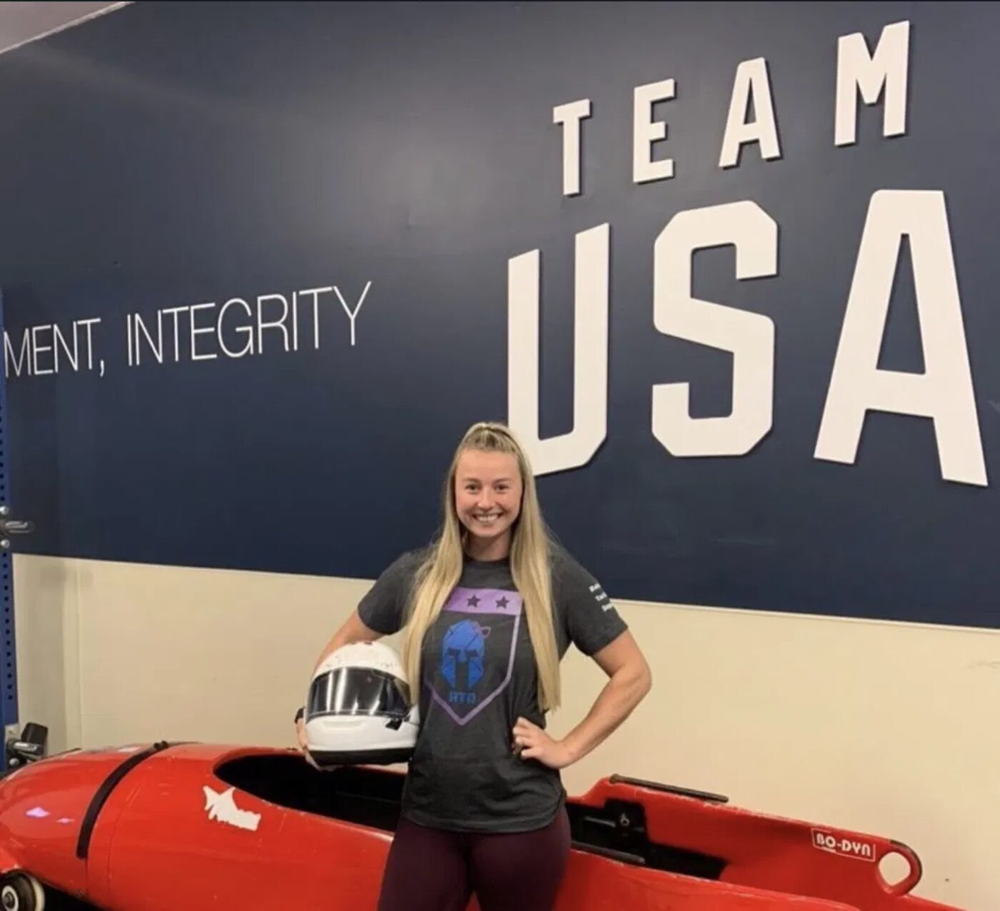

Where it started
Raising Tactical Daughters started with a dad's fear. When my daughter was born, I looked at the world she was coming into and realized I didn't know how to prepare her for it. So I decided to raise her to be strong, aware and ready.
That idea turned into a movement. It started in Peoria, Arizona with an Instagram account and a few shirts, and grew into a community of more than 150,000 people across 35 states and four countries who believed girls and women deserve the awareness and confidence to handle any situation.
Proceeds went to training for women, in person and online, focused on preventing domestic violence and human trafficking. Support came from everywhere, from first responders at home to service members overseas.
Kevin never took a paycheck. Not once.
